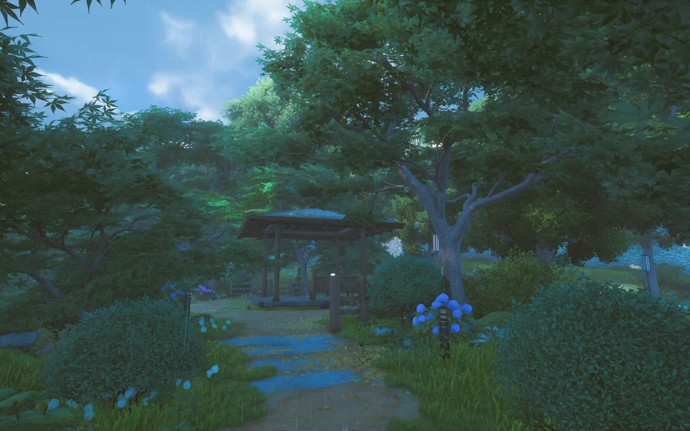

收藏间
把想再看一眼的东西放在一起。

从房间里拾三种颜色
- 橘色沙发
#C86A31 - 窗边的蓝
#47679C - 淡粉墙面
#DBA39C

下次想试试
选同一个地方，截下晴天和雨天各一张。把两张图并排放，再写一句各自的声音。
读《把声音写下来》把想再看一眼的东西放在一起。
#C86A31#47679C#DBA39C
选同一个地方，截下晴天和雨天各一张。把两张图并排放，再写一句各自的声音。
读《把声音写下来》